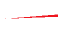
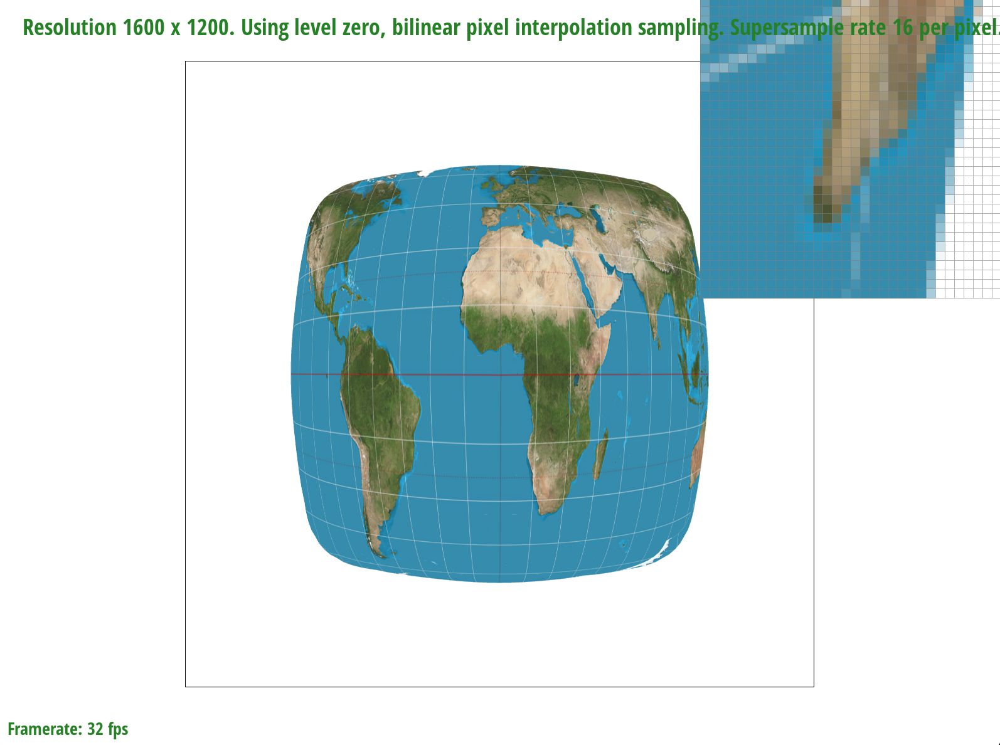

We implemented a bunch of texture mapping and anti-aliasing methods and tested it on real images.
Task 1: Drawing Single-Color Triangles
How to rasterize triangles
First, I make sure to iterate through all coordinates within (x_min, y_min) and (x_max, y_max), as these are all the coordinates that can be within the triangle. There are three edges: (x0, y0) to (x1, y1), (x1, y1) to (x2, y2), and (x2, y2) to (x0, y0)
For each point, I check if it is inside each edge by computing the cross product, (x - ax)(by - ay) - (y - ay)(bx - ax), where (ax, ay) and (bx, by) are the endpoints of the edge I am checking
If a point’s cross products with the three edges of the triangle are all less than 0 or all greater than 0, then the point is considered within the triangle, and we can thus fill in the pixel with the color.
Comparison with bounding box algorithm
Our algorithm is no worse than one that checks each sample within the bounding box of the triangle, because instead of checking each pixel on the screen, it only checks the pixels that are within (x_min, y_min) and (x_max, y_max), the bounding box of the triangle. This works because only these coordinates can possibly be within the triangle.
Caption goes here.
Caption goes here.
Task 1 Extra Credit
To optimize my code, I precomputed the edge coefficients that I calculated in my original helper function edge_function(). I precomputed y0-y1, y1-y2, y2-y0, x1-x0, x2-x1, x0-x2, x0*y1 - x1*y0, x1*y2 - x2*y1, and x2*y0 - x0*y2, so that I could directly use these values instead of recomputing them every time I called edge_function(). I then used std::chrono::high_resolution_clock, which gave me a table of times (in microseconds), of how long the function calls took. I kept track of the times for both my original code and with the optimized code where I precomputed the edge coefficients. The average time for the original code was 10.32 seconds, while the average time for the optimized code was 10 seconds, so it was slightly faster. This spreadsheet shows the entire timing comparison table and averages of both columns.
Task 2: Antialiasing by Supersampling
New Supersampling Algorithm
The new rasterize_triangle() function also iterates through all coordinates within (x_min, y_min) and (x_max, y_max), or the bounding box of the triangle. However, the difference now is that there is a sampling rate, so each pixel is split into a sqrt(sample_rate) x sqrt(sample_rate) grid.
My approach iterates through each of these subpixels, so instead of (x+0.5, y+0.5), I check ((x + (i+0.5) / sqrt(sample_rate)), (y + (j+0.5) / sqrt(sample_rate))), where i and j are all values from 0 to sqrt(sample_rate). If this point is calculated to be inside all three edges, and thus within the triangle, we fill in the subpixel.
I also increased the memory/storage by resizing the sample buffer to width*height*sample_rate, so it has enough space to store the colors of each subpixel.
In addition, I modified the resolve_to_framebuffer() function, so that it averages the colors of the subpixels. This shows more smooth transitions between colors instead of jagged edges.
The data structure that I used was a buffer to store the colors of all subpixels.
Supersampling is useful because it reduces jagged edges and shows a smoother color transition.
I modified the rasterization pipeline by having the buffer store the colors for each subpixel instead of each pixel, filling each subpixel individually, and averaging each pixel’s subpixel colors. I used supersampling to antialias my triangles by checking multiple subpixels per pixel and averaging the colors of these subpixels, then filling in the corresponding pixel with this average color.
test4.svg parametric comparison
1x

4x
16x
For sample_rate = 1, the image shows jagged edges, but as the sampling rate is increased, the edges appear to become smoother with successful antialiasing.
Task 3: Transforms
robot
In our updated version, the cubeman is waving with his right arm, and his left arm is now down. I did this by rotating his right arm by 60 degrees and his left arm by 90 degrees (both clockwise).
Task 4: Barycentric coordinates
Barycentric Coordinates and test7.svg
Any point within a triangle can be expressed as a unique combination of the triangle’s three coordinates. For example, if we are looking at a coordinate close to vertex A but far away from vertices B and C, the coefficient for vertex A will be larger than the coefficients of vertices B and C.
If a triangle’s three vertices are given different colors, the color of any point within this triangle will be expressed as a combination of the colors based on its position relative to these three vertices:
3-color triangletest7.svg
Task 5: "Pixel sampling" for texture mapping
Pixel Sampling
If we want to assign each pixel a color, we take the coordinates of the pixel and map it to the coordinates of a texture by linearly projecting screen coordinates into the subspace defined by the texture endpoint coordinates
However, these coordinates need not be integers–we use the chosen interpolation method, bilinear or nearest, to solve this problem
Nearest simply rounds the coordinates to get the desired texel color, while bilinear interpolates between the neighboring coordinates’ colors
Example SVG
Nearest, 1x
Bilinear, 1x
Nearest, 16x

Bilinear, 16x
When using bilinear interpolation (the images on the right), the zoomed image shows much smoother features compared to nearest neighbor interpolation (the corresponding images on the left). Although the change is very slight, if you look at features like the white lines on the top left and middle of the images, these white lines are smoother and less pronounced in the images on the right, which use bilinear interpolation.
There will be a large difference in the two methods especially when we use a smaller sample rate (like 1 sample per pixel), because the image will have more jagged edges and features, and implementing bilinear interpolation as opposed to nearest neighbor interpolation will help smooth out the edges.
Task 6: "Level Sampling" with mipmaps for texture mapping
Level Sampling
Different unit areas of the image may map to areas of different sizes in texture space–that is, the texture sampling is inherently non uniform across the image
To combat aliasing, we choose the texture sampling rate in “levels” so that each region of the image is sampled only as frequently as needed
To implement this, we essentially compute the Jacobian of the texture space transform using the vectors u, v in texture space and x, y in screen space, and their derivatives d(u, v)/dx, d(u, v)/dy
This gives us a “level” number which we take the log of to obtain the closest corresponding texture map level D, which is stored in resolutions of exponentially-spaced values
Tradeoffs of antialiasing techniques
Pixel Sampling:Nearest texel sampling results in jagged edges as adjacent pixels may have colors originating from texels up to 3 apart. While being marginally slower, bilinear filtering actually acts as an LPF, resulting in a more antialiased image.
Samples per Pixel:Theoretically, you could perfectly antialias by supersampling arbitrarily and filtering. However, this comes at the expense of 2n times more memory to store the buffer, and as much more processing time to run computations on each super-pixel. Additionally, only a small portion of the image may need to be supersampled, but the entire image will be done anyway.
Level sampling: By computing the theoretical maximum sampling frequency of a texture at a region in the image, we can bound the maximum resolution of the texture needed at that patch–essentially only supersampling when required to. However, we must store multiple versions of the same image at different resolutions, and perform extra logic per pixel to compute the sampling rate and required level. But this is still faster than supersampling and nearly optimal, barring excess sampling since we only store a few levels.
Comparison of AA settings
Nearest pixel, level 0, 1x SS
Nearest pixel, nearest level, 1x SS
Bilinear pixel interpolation, nearest level, 1x SS
Trilinear: Bilinear pixel interpolation, bilinear level interpolation, 1x SS
The difference between the last two is not super pronounced, but we wanted to show final trilinear results–I promise there is a difference! Look at the three black dots above the bell.